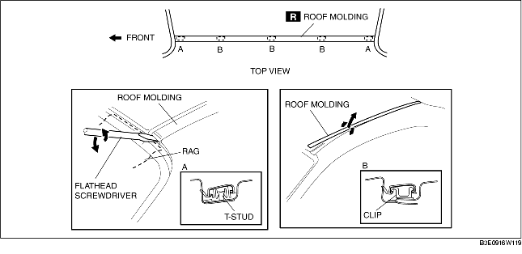

1. Detach the roof molding from the T-stud at section A, using a flathead screwdriver or equivalent tool.
2. While pulling the roof molding up, detach it from the clips at sections B, and then remove the roof molding.
